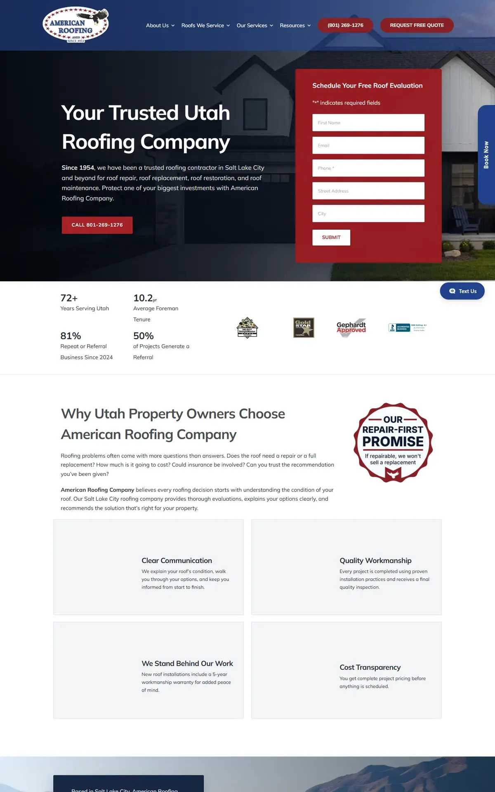
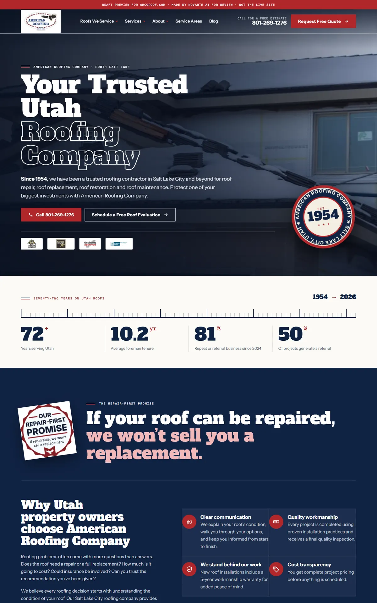
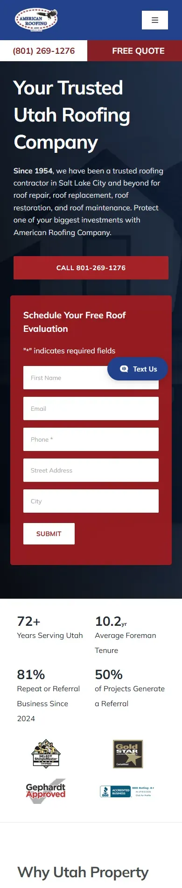
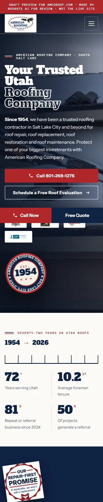

Start with the report to see what was wrong, then what we fixed, then the before-and-after. When you're ready, open the new website. Nothing here is live.
What we found on the current website before the redesign.
There was no keyword report for this client, so this is the review of the live site done for the redesign (Oct 2026).
| Area | What we found | Status |
|---|---|---|
| Typography | Mulish everywhere with gray headings; low hierarchy | Needs work |
| Layout | Identical white cards in every section; big empty gap in the steps section | Needs work |
| Images | Some sections showed blank image boxes; several iStock photos of models posing as staff | Needs work |
| Sitemap | 9 URLs in the sitemap are really 301 redirects (2 of them send people to the home page) | Problem |
| Internal links | 30 links in the content went through old redirecting URLs | Needs work |
| Titles | 76 titles outside 50-60 characters; home title is 94 characters | Needs work |
| Tracking | Google Tag Manager, Hotjar and Alivo chat in place | OK |
Each problem from the report or the site review, and what the new site does about it.
| Problem | What we did | Status |
|---|---|---|
| First draft looked templated and plain | Redesigned as American heritage: an enamel Est. 1954 pin in the hero, a 1954 to 2026 year ruler that fills as you scroll beside the real numbers, the Repair-First Promise set like a stamp, and a project wall with their school and commercial jobs | Fixed |
| Generic look (Mulish, gray headings, identical cards) | New heritage design from the eagle logo: navy and red, Bitter slab headings, "Since 1954" seal, real stat band | Fixed |
| Blank image boxes and stock "staff" photos | All 243 images local; real project galleries restored; 4 stock team photos removed | Fixed |
| 9 sitemap URLs that are redirects | Left out of the new sitemap; redirects kept for go-live | Needs developer |
| 30 links through redirecting URLs | Pointed straight at the final pages | Fixed |
| No ice dam content (only a lifespan post) | New post: "How to Prevent Ice Dams on a Utah Roof" | Fixed |
| Over-long, stuffed titles | Kept as-is (no keyword file); recommend a title pass | Needs keyword data |
| Tracking and chat | GTM, Hotjar and Alivo kept in the live build | Kept |
The home page, old site on the left and the new design on the right. Screenshots from 16 to 17 Oct 2026.




Jump straight into key pages of the new site. Use the browser back button to come back here.
These need answers before the site goes live. Full details are in the notes file in OUTBOX.